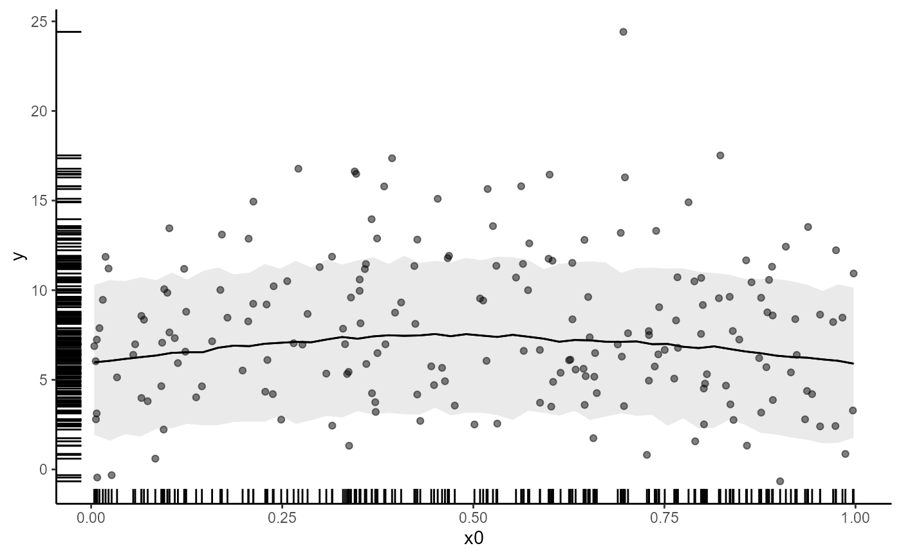
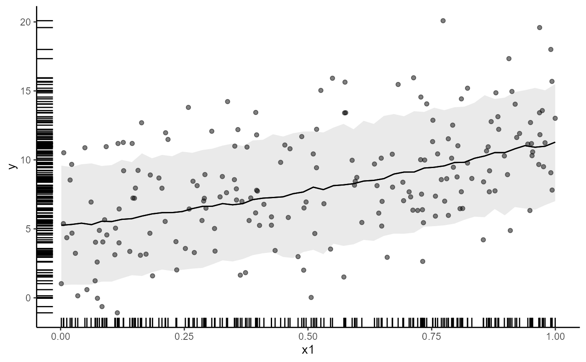
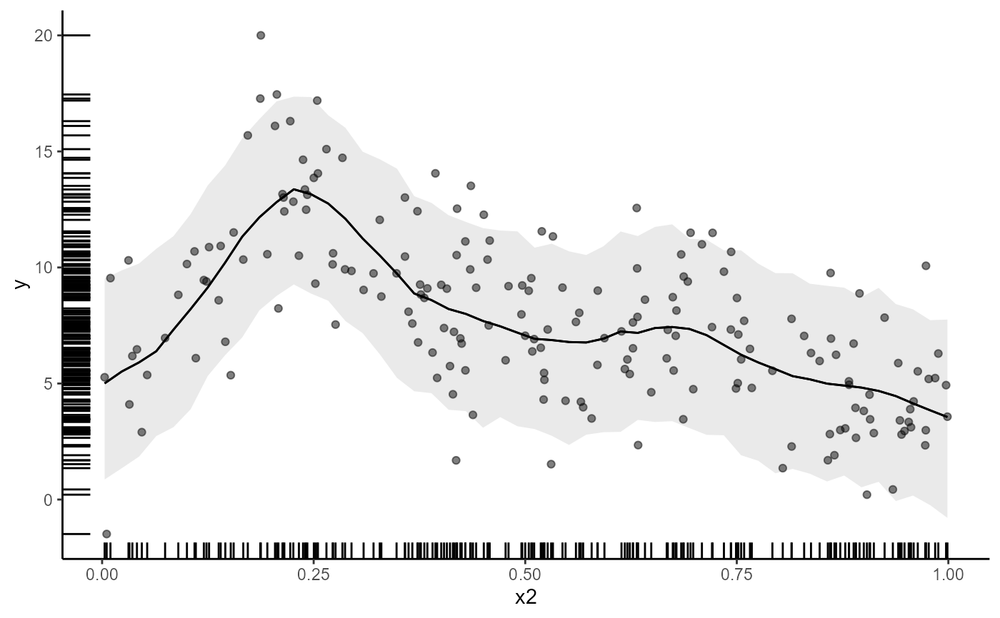
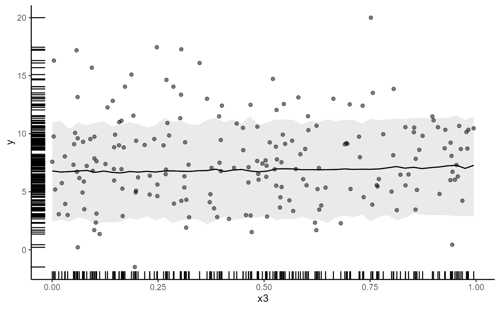
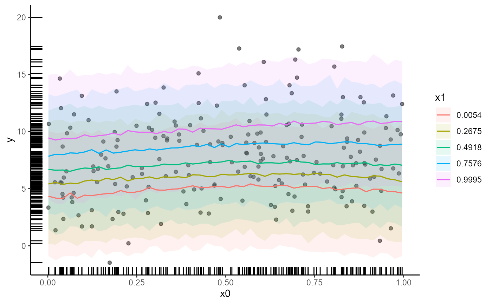
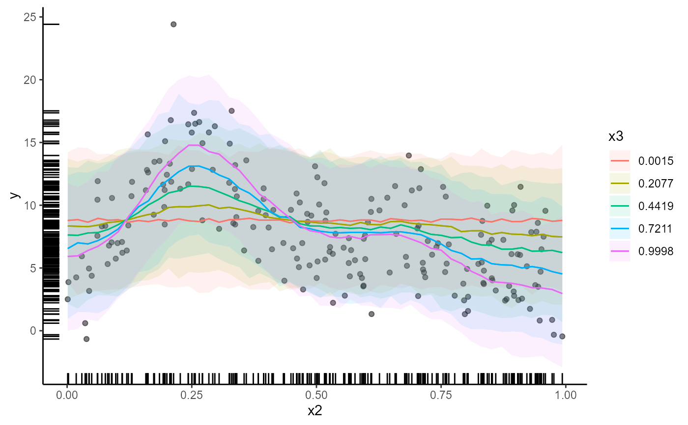

Functions used in definition of smooth terms within model formulae. The functions do not evaluate a (spline) smooth - they exist purely to help set up mvgam models using spline based smooths.
Details
The functions defined here are just simple wrappers of the respective
functions of the mgcv package. When using them, please cite the
appropriate references obtained via citation("mgcv").
Examples
# \donttest{
# Simulate some data
dat <- mgcv::gamSim(1, n = 200, scale = 2)
#> Gu & Wahba 4 term additive model
# Fit univariate smooths for all predictors
fit1 <- mvgam(y ~ s(x0) + s(x1) + s(x2) + s(x3),
data = dat, chains = 2, family = gaussian())
#> Compiling Stan program using cmdstanr
#>
#> Start sampling
#> Running MCMC with 2 parallel chains...
#>
#> Chain 1 Iteration: 1 / 1000 [ 0%] (Warmup)
#> Chain 2 Iteration: 1 / 1000 [ 0%] (Warmup)
#> Chain 2 Iteration: 100 / 1000 [ 10%] (Warmup)
#> Chain 1 Iteration: 100 / 1000 [ 10%] (Warmup)
#> Chain 2 Iteration: 200 / 1000 [ 20%] (Warmup)
#> Chain 1 Iteration: 200 / 1000 [ 20%] (Warmup)
#> Chain 1 Iteration: 300 / 1000 [ 30%] (Warmup)
#> Chain 2 Iteration: 300 / 1000 [ 30%] (Warmup)
#> Chain 1 Iteration: 400 / 1000 [ 40%] (Warmup)
#> Chain 2 Iteration: 400 / 1000 [ 40%] (Warmup)
#> Chain 1 Iteration: 500 / 1000 [ 50%] (Warmup)
#> Chain 1 Iteration: 501 / 1000 [ 50%] (Sampling)
#> Chain 2 Iteration: 500 / 1000 [ 50%] (Warmup)
#> Chain 2 Iteration: 501 / 1000 [ 50%] (Sampling)
#> Chain 1 Iteration: 600 / 1000 [ 60%] (Sampling)
#> Chain 1 Iteration: 700 / 1000 [ 70%] (Sampling)
#> Chain 2 Iteration: 600 / 1000 [ 60%] (Sampling)
#> Chain 1 Iteration: 800 / 1000 [ 80%] (Sampling)
#> Chain 2 Iteration: 700 / 1000 [ 70%] (Sampling)
#> Chain 1 Iteration: 900 / 1000 [ 90%] (Sampling)
#> Chain 1 Iteration: 1000 / 1000 [100%] (Sampling)
#> Chain 1 finished in 7.6 seconds.
#> Chain 2 Iteration: 800 / 1000 [ 80%] (Sampling)
#> Chain 2 Iteration: 900 / 1000 [ 90%] (Sampling)
#> Chain 2 Iteration: 1000 / 1000 [100%] (Sampling)
#> Chain 2 finished in 9.6 seconds.
#>
#> Both chains finished successfully.
#> Mean chain execution time: 8.6 seconds.
#> Total execution time: 9.7 seconds.
#>
summary(fit1)
#> GAM formula:
#> y ~ s(x0) + s(x1) + s(x2) + s(x3)
#> <environment: 0x0000022a43206a58>
#>
#> Family:
#> gaussian
#>
#> Link function:
#> identity
#>
#> Trend model:
#> None
#>
#> N series:
#> 1
#>
#> N timepoints:
#> 200
#>
#> Status:
#> Fitted using Stan
#> 2 chains, each with iter = 1000; warmup = 500; thin = 1
#> Total post-warmup draws = 1000
#>
#>
#> Observation error parameter estimates:
#> 2.5% 50% 97.5% Rhat n_eff
#> sigma_obs[1] 1.9 2.1 2.3 1 625
#>
#> GAM coefficient (beta) estimates:
#> 2.5% 50% 97.5% Rhat n_eff
#> (Intercept) 8.100 8.40000 8.700 1.00 1536
#> s(x0).1 -0.440 -0.00610 0.380 1.00 401
#> s(x0).2 -1.700 0.00280 1.200 1.01 191
#> s(x0).3 -0.400 -0.03500 0.210 1.00 587
#> s(x0).4 -0.720 0.08900 0.940 1.01 215
#> s(x0).5 -0.360 -0.02700 0.170 1.00 277
#> s(x0).6 -0.830 -0.09300 0.520 1.00 209
#> s(x0).7 -0.120 0.00460 0.140 1.00 442
#> s(x0).8 -1.100 0.58000 3.000 1.00 182
#> s(x0).9 -0.400 -0.03900 0.310 1.00 651
#> s(x1).1 -1.000 -0.01100 0.440 1.00 180
#> s(x1).2 -1.600 -0.04300 0.770 1.00 427
#> s(x1).3 -0.110 0.03600 0.880 1.00 107
#> s(x1).4 -0.900 -0.05200 0.390 1.00 445
#> s(x1).5 -0.600 -0.02500 0.089 1.01 121
#> s(x1).6 -0.300 0.05900 0.910 1.00 302
#> s(x1).7 -0.077 0.02500 0.440 1.00 211
#> s(x1).8 -3.100 -0.30000 0.420 1.00 200
#> s(x1).9 0.055 1.80000 2.400 1.00 114
#> s(x2).1 3.900 4.90000 7.400 1.00 152
#> s(x2).2 9.200 16.00000 24.000 1.01 429
#> s(x2).3 -1.200 0.50000 2.400 1.00 381
#> s(x2).4 -2.300 3.20000 8.300 1.00 483
#> s(x2).5 2.200 4.30000 6.100 1.01 356
#> s(x2).6 -12.000 -6.40000 -1.000 1.00 422
#> s(x2).7 -6.400 -3.90000 -1.300 1.01 319
#> s(x2).8 9.500 21.00000 33.000 1.00 411
#> s(x2).9 -0.390 0.09400 6.600 1.02 110
#> s(x3).1 -0.220 0.00290 0.180 1.01 251
#> s(x3).2 -0.660 -0.01100 0.340 1.01 145
#> s(x3).3 -0.087 -0.00370 0.065 1.00 464
#> s(x3).4 -0.290 -0.00100 0.200 1.01 172
#> s(x3).5 -0.066 -0.00031 0.110 1.01 141
#> s(x3).6 -0.200 -0.00023 0.270 1.00 179
#> s(x3).7 -0.140 0.00066 0.068 1.01 150
#> s(x3).8 -0.850 0.01600 0.720 1.00 193
#> s(x3).9 -0.260 0.01500 0.280 1.00 958
#>
#> Approximate significance of GAM smooths:
#> edf Ref.df Chi.sq p-value
#> s(x0) 2.44 9 9.72 0.89
#> s(x1) 2.26 9 670.20 <2e-16 ***
#> s(x2) 7.70 9 1703.12 <2e-16 ***
#> s(x3) 1.14 9 0.18 1.00
#> ---
#> Signif. codes: 0 ‘***’ 0.001 ‘**’ 0.01 ‘*’ 0.05 ‘.’ 0.1 ‘ ’ 1
#>
#> Stan MCMC diagnostics:
#> n_eff / iter looks reasonable for all parameters
#> Rhat looks reasonable for all parameters
#> 0 of 1000 iterations ended with a divergence (0%)
#> 0 of 1000 iterations saturated the maximum tree depth of 12 (0%)
#> E-FMI indicated no pathological behavior
#>
#> Samples were drawn using NUTS(diag_e) at Tue Jul 02 10:47:45 AM 2024.
#> For each parameter, n_eff is a crude measure of effective sample size,
#> and Rhat is the potential scale reduction factor on split MCMC chains
#> (at convergence, Rhat = 1)
conditional_effects(fit1)




# Fit a more complicated smooth model
fit2 <- mvgam(y ~ te(x0, x1) + s(x2, by = x3),
data = dat, chains = 2, family = gaussian())
#> Compiling Stan program using cmdstanr
#>
#> Start sampling
#> Running MCMC with 2 parallel chains...
#>
#> Chain 1 Iteration: 1 / 1000 [ 0%] (Warmup)
#> Chain 2 Iteration: 1 / 1000 [ 0%] (Warmup)
#> Chain 1 Iteration: 100 / 1000 [ 10%] (Warmup)
#> Chain 2 Iteration: 100 / 1000 [ 10%] (Warmup)
#> Chain 1 Iteration: 200 / 1000 [ 20%] (Warmup)
#> Chain 2 Iteration: 200 / 1000 [ 20%] (Warmup)
#> Chain 1 Iteration: 300 / 1000 [ 30%] (Warmup)
#> Chain 2 Iteration: 300 / 1000 [ 30%] (Warmup)
#> Chain 1 Iteration: 400 / 1000 [ 40%] (Warmup)
#> Chain 2 Iteration: 400 / 1000 [ 40%] (Warmup)
#> Chain 1 Iteration: 500 / 1000 [ 50%] (Warmup)
#> Chain 2 Iteration: 500 / 1000 [ 50%] (Warmup)
#> Chain 1 Iteration: 501 / 1000 [ 50%] (Sampling)
#> Chain 2 Iteration: 501 / 1000 [ 50%] (Sampling)
#> Chain 1 Iteration: 600 / 1000 [ 60%] (Sampling)
#> Chain 2 Iteration: 600 / 1000 [ 60%] (Sampling)
#> Chain 1 Iteration: 700 / 1000 [ 70%] (Sampling)
#> Chain 2 Iteration: 700 / 1000 [ 70%] (Sampling)
#> Chain 2 Iteration: 800 / 1000 [ 80%] (Sampling)
#> Chain 1 Iteration: 800 / 1000 [ 80%] (Sampling)
#> Chain 2 Iteration: 900 / 1000 [ 90%] (Sampling)
#> Chain 1 Iteration: 900 / 1000 [ 90%] (Sampling)
#> Chain 2 Iteration: 1000 / 1000 [100%] (Sampling)
#> Chain 2 finished in 3.7 seconds.
#> Chain 1 Iteration: 1000 / 1000 [100%] (Sampling)
#> Chain 1 finished in 4.2 seconds.
#>
#> Both chains finished successfully.
#> Mean chain execution time: 4.0 seconds.
#> Total execution time: 4.3 seconds.
#>
summary(fit2)
#> GAM formula:
#> y ~ te(x0, x1) + s(x2, by = x3)
#> <environment: 0x0000022a43206a58>
#>
#> Family:
#> gaussian
#>
#> Link function:
#> identity
#>
#> Trend model:
#> None
#>
#> N series:
#> 1
#>
#> N timepoints:
#> 200
#>
#> Status:
#> Fitted using Stan
#> 2 chains, each with iter = 1000; warmup = 500; thin = 1
#> Total post-warmup draws = 1000
#>
#>
#> Observation error parameter estimates:
#> 2.5% 50% 97.5% Rhat n_eff
#> sigma_obs[1] 2.3 2.5 2.8 1 1199
#>
#> GAM coefficient (beta) estimates:
#> 2.5% 50% 97.5% Rhat n_eff
#> (Intercept) 7.9000 8.600 9.30 1.00 1148
#> te(x0,x1).1 -2.8000 -1.700 -0.70 1.00 528
#> te(x0,x1).2 -1.2000 0.027 1.10 1.00 469
#> te(x0,x1).3 0.6100 2.100 3.50 1.00 406
#> te(x0,x1).4 1.3000 3.500 5.60 1.00 565
#> te(x0,x1).5 -3.8000 -2.700 -1.80 1.00 986
#> te(x0,x1).6 -1.3000 -0.470 0.28 1.00 828
#> te(x0,x1).7 0.0960 0.850 1.70 1.00 733
#> te(x0,x1).8 2.2000 3.200 4.10 1.00 618
#> te(x0,x1).9 3.2000 4.300 5.70 1.00 591
#> te(x0,x1).10 -3.5000 -2.400 -1.20 1.00 596
#> te(x0,x1).11 -1.2000 -0.410 0.62 1.00 435
#> te(x0,x1).12 0.0098 0.810 1.80 1.00 322
#> te(x0,x1).13 2.4000 3.300 4.50 1.00 299
#> te(x0,x1).14 3.1000 4.200 5.80 1.01 295
#> te(x0,x1).15 -3.4000 -2.300 -0.91 1.00 656
#> te(x0,x1).16 -1.2000 -0.310 0.71 1.00 603
#> te(x0,x1).17 -0.3300 0.640 1.50 1.00 359
#> te(x0,x1).18 1.9000 2.900 3.90 1.00 501
#> te(x0,x1).19 2.7000 3.800 5.20 1.00 353
#> te(x0,x1).20 -4.9000 -2.700 -0.40 1.00 667
#> te(x0,x1).21 -2.9000 -1.400 -0.05 1.00 732
#> te(x0,x1).22 -2.1000 -0.570 0.53 1.00 409
#> te(x0,x1).23 -0.8800 0.890 2.20 1.00 348
#> te(x0,x1).24 -0.5900 2.100 4.30 1.00 320
#> s(x2):x3.1 -24.0000 4.300 7.50 1.15 16
#> s(x2):x3.2 4.4000 6.300 12.00 1.09 25
#> s(x2):x3.3 2.5000 5.600 14.00 1.11 21
#> s(x2):x3.4 -0.3700 2.400 5.30 1.02 186
#> s(x2):x3.5 -11.0000 -8.200 -3.00 1.05 40
#> s(x2):x3.6 0.4100 3.700 6.60 1.01 114
#> s(x2):x3.7 -0.9700 3.000 6.20 1.05 52
#> s(x2):x3.8 -4.4000 -1.500 1.60 1.01 468
#> s(x2):x3.9 -0.5100 0.047 14.00 1.16 15
#> s(x2):x3.10 -0.4500 0.067 10.00 1.12 19
#>
#> Approximate significance of GAM smooths:
#> edf Ref.df Chi.sq p-value
#> te(x0,x1) 12.17 24 764 <2e-16 ***
#> s(x2):x3 9.29 10 1060 <2e-16 ***
#> ---
#> Signif. codes: 0 ‘***’ 0.001 ‘**’ 0.01 ‘*’ 0.05 ‘.’ 0.1 ‘ ’ 1
#>
#> Stan MCMC diagnostics:
#> n_eff / iter looks reasonable for all parameters
#> Rhats above 1.05 found for 7 parameters
#> *Diagnose further to investigate why the chains have not mixed
#> 0 of 1000 iterations ended with a divergence (0%)
#> 0 of 1000 iterations saturated the maximum tree depth of 12 (0%)
#> E-FMI indicated no pathological behavior
#>
#> Samples were drawn using NUTS(diag_e) at Tue Jul 02 10:48:35 AM 2024.
#> For each parameter, n_eff is a crude measure of effective sample size,
#> and Rhat is the potential scale reduction factor on split MCMC chains
#> (at convergence, Rhat = 1)
conditional_effects(fit2)


# }